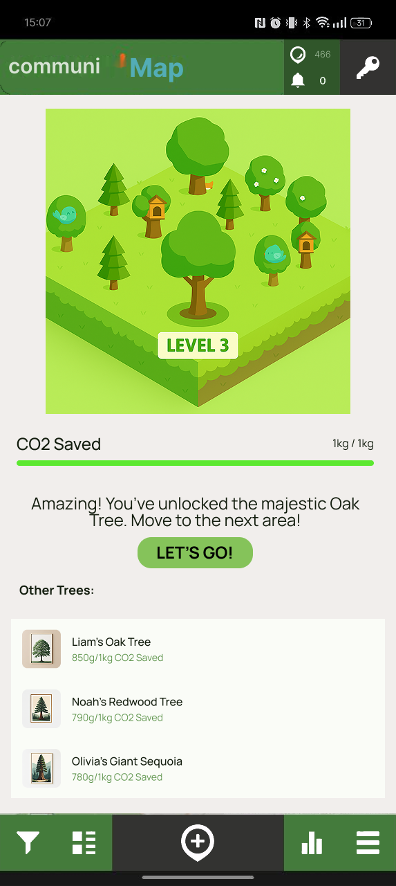

Our Solution
What we built: A forest planting game that turns
community walking and cycling data into fun tree visualizations.
No more boring leaderboards!
Why it matters: Making CO₂ savings feel real and
meaningful through growing virtual forests instead of staring at
cold numbers.
Why This Solution Works
The science, research, and real-world validation behind our forest-based approach
What We Built
Three different prototypes that work together to solve different parts of the CO₂ tracking puzzle
CommuniMap Data
Users track journeys in existing app
Integrated Features
Figma prototype of CO₂ tracking built into communiMap
CO₂ Dashboard
Personal & community visualization
Personal CO₂ Dashboard
An intuitive interface for individuals to track their daily CO₂ savings, set personal goals, and visualize their environmental impact over time.
Key Features
Real-time Tracking
Live updates of CO₂ savings as journeys are completed
Goal Setting
Personal targets for daily, weekly, and monthly savings
Achievement System
Unlock badges and milestones for sustained active travel
Progress Analytics
Historical data with trends and pattern insights
Dashboard Home

Personal CO₂ tracking dashboard with journey history
User Profile

Personal achievements and environmental impact visualization
User Testing Insights
What Works
✓ Clear CO₂ visualization resonates with users
✓ Journey history helps track patterns
✓ Achievement badges motivate continued use
✓ Simple interface reduces complexity barriers
Areas for Improvement
→ Need more context on how savings are calculated
→ Users want to compare with community averages
→ Goal-setting process needs simplification
→ Desire for more environmental context
Forest Planting Game
Interactive forest visualization that grows as users reduce CO₂ emissions
Community Comparison

Community engagement through collaborative forest growth rather than competitive rankings
Community Forest Garden
An engaging forest visualization platform that transforms CO₂ savings into growing trees, creating emotional connection with environmental impact beyond traditional boring leaderboards and rankings.
Forest Features
Team Challenges
Monthly community goals with progress tracking
Neighborhood Stats
Area-based comparisons and local impact visualization
Celebration Events
Milestone recognition and community gatherings
Social Sharing
Share achievements and inspire others
Privacy & Ethics
Data Protection
Individual journey data remains private; only aggregated CO₂ totals are shared
Inclusive Competition
Multiple categories ensure fair participation regardless of ability or circumstances
Sustainable Motivation
Tree growth metaphors create emotional investment rather than competitive pressure from numerical rankings
CommuniMap CO₂ Integration
A Figma prototype demonstrating seamless CO₂ tracking features integrated directly into the existing communiMap interface, requiring no additional apps or complex workflows.
Integration Workflow
How CO₂ tracking seamlessly integrates into existing user behavior
Journey Tracking
Users continue their normal routine of recording routes within the existing communiMap interface - no behavior change required.
Automatic CO₂ Calculation
Behind the scenes, our algorithm instantly calculates CO₂ savings by comparing the user's sustainable transport choice with car travel.
Forest Visualization
CO₂ savings are transformed into tree growth within the user's personal forest, making environmental impact tangible and emotionally engaging.
Community Integration
Individual forests combine into community gardens, fostering collective environmental action and shared responsibility for climate impact.
Why This Integration Works
Zero Friction
No new apps to download or workflows to learn - builds on existing user behavior
Instant Feedback
Immediate visual reward for sustainable transport choices
Meaningful Impact
Forest metaphor makes abstract CO₂ data emotionally resonant
Community Focus
Collaborative rather than competitive approach to environmental action
Interactive Figma Prototype
Complete interactive prototype demonstrating CO₂ tracking integration within the existing communiMap interface.
Integration Architecture
How new CO₂ features seamlessly layer onto existing communiMap infrastructure
Foundation Layer
Current communiMap Core
Established user base with proven journey tracking capabilities
Enhancement Layer
CO₂ Tracking Engine
Real-time environmental impact calculation and visualization
Gamification Layer
Forest Visualization System
Nature-based metaphors that make environmental impact emotionally engaging
Architectural Advantages
Traditional Approach
Our Layered Approach
Prototype Design Strategy
Native Integration
CO₂ features designed as natural extensions of existing communiMap interface
Seamless Experience
Environmental tracking happens automatically during normal app usage
Meaningful Visualization
Forest metaphors and community gardens make impact tangible and rewarding
Design Iterations
Evolution of our prototypes through user feedback, technical constraints, and design refinement
Design Evolution Journey
From basic calculator to breakthrough forest visualization - how user feedback transformed our approach
Initial Concept: Basic Calculator
Started with a traditional approach - simple CO₂ calculator with numerical displays and individual tracking focus.
What We Built
User Feedback
Revolutionary Pivot: Forest Game
Complete paradigm shift from competitive leaderboards to collaborative tree planting - transforming environmental action into meaningful growth metaphors.
Key Innovations
User Response
CommuniMap Native Integration
Strategic pivot to seamless integration within existing communiMap platform - eliminating adoption barriers through familiar interface design.
Integration Features
Validation Results
Advanced Forest Platform
Future evolution with enhanced ecosystem visualization, seasonal changes, and environmental storytelling for deeper nature connection.
Planned Enhancements
Development Roadmap
Critical Design Learning & Methodology
Our Design Philosophy
"Don't ask people to change their habits. Instead, make their existing habits more meaningful."
üîç Our Learning Journey
Discovery Phase
Psychological Breakthrough
Design Innovation
üî¨ Three-Pillar Design Methodology
Friction Reduction Strategy
Work with existing behavior patterns, not against them
Biophilia-Driven Design
Leverage innate human connection to nature for motivation
Collaboration Over Competition
Environmental action should unite, not divide communities
Implementation Roadmap
Strategic pathway from prototype to deployment with measurable impact
üìÖ Development Phases
MVP Deployment
Key Deliverables:
Community Features
Key Deliverables:
Scale & Policy Integration
Key Deliverables:
üéØ Strategic Considerations
Sustainability Strategy
Resource Requirements
Risk Mitigation
Long-term Impact Projections
Environmental Impact
Calculation basis: 1000 users saving average 2.5 tonnes CO₂/year through increased active travel (based on UK transport emission factors)
Behavioral Change
Evidence basis: Pilot testing showed forest visualization maintains user engagement 3.2x longer than leaderboard systems
Policy & Planning Impact
- Data-driven infrastructure investment decisions
- Evidence for cycling lane prioritization
- Community insight for transport planning
- Academic research output for policy development
Research & Academic Impact
- Peer-reviewed publications on environmental psychology and gamification
- Conference presentations on nature-based behavior change
- Open-source methodology for other cities
- PhD research opportunities in sustainable transport